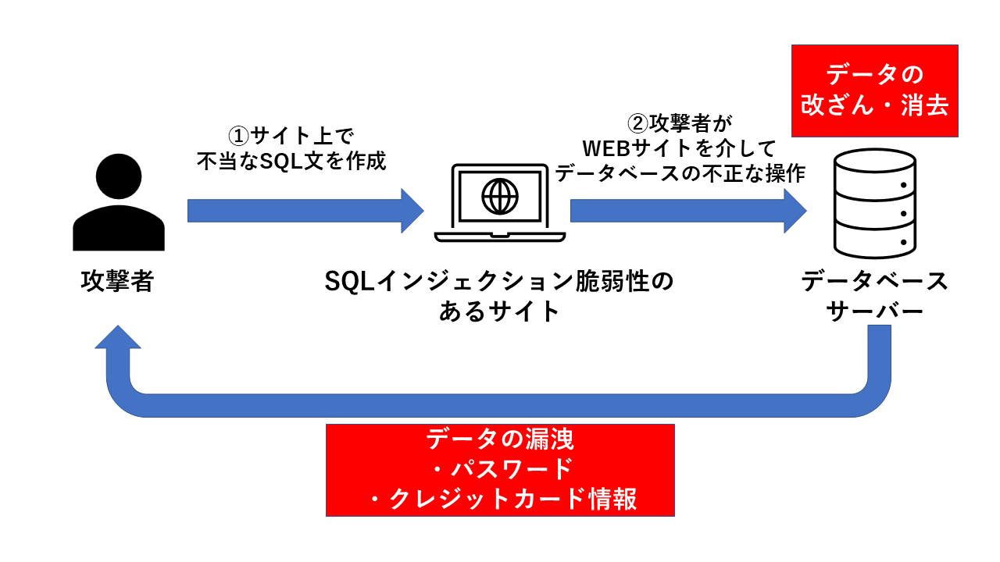

SQLインジェクション
SQLインジェクションとは、SQLの呼び出し方に不備があるようなときに
意図されていないSQL文が作成されてしまうことにより
データベースを不正に操作されるような攻撃のことです。
SQLとはデータベースを操作する言語のことで、
脆弱性をついてSQL文を改ざんすることで、
データベースを不正に操作します。

①攻撃者はまず、XSS脆弱性があるサイト（Ａ）を探し出します。
その後、XSS脆弱性を利用して、A上で不正に実行されてしまうような
スクリプトを作成します。
そのスクリプトが隠されたAへのリンク（罠）を
掲示板のようなサイト（Ｂ）にしかけます。
②ユーザーが誤ってＢにしかけられた罠を閲覧してしまいます。
③罠を閲覧してしまったユーザーはＡに誘導されます。
④③と同時に、罠に隠されていた不正なスクリプトがAで実行されてしまいます。
このスクリプトにより、
ユーザーが入力した情報やCookieが攻撃者へ漏洩したり、
マルウェアに感染されたりしてしまいます。